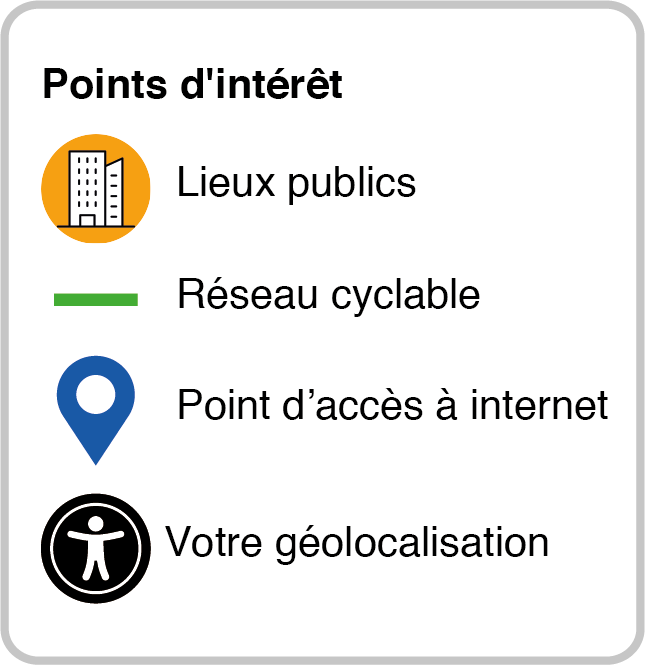

Bienvenue à notre ville !
Clique ici pour savoir votre géolocalisation

Point d'accès à internet:
Tous
La Haute-Saint-Charles
Sainte-Foy–Sillery–Cap-Rouge
Hôtel de ville de L'Ancienne-Lorette
Les Rivières
Charlesbourg